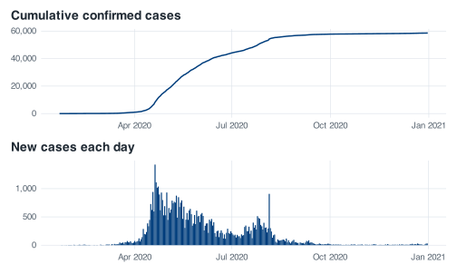

covid <- read_covid()
covid
#> # A tibble: 345 × 13
#> administrative_area_level_1 confirmed deaths date stringency_index
#> <chr> <dbl> <dbl> <date> <dbl>
#> 1 Singapore 0 NA 2020-01-22 19.4
#> 2 Singapore 1 NA 2020-01-23 25
#> 3 Singapore 3 NA 2020-01-24 25
#> 4 Singapore 3 NA 2020-01-25 25
#> 5 Singapore 4 NA 2020-01-26 25
#> 6 Singapore 5 NA 2020-01-27 25
#> 7 Singapore 7 NA 2020-01-28 25
#> 8 Singapore 7 NA 2020-01-29 25
#> 9 Singapore 10 NA 2020-01-30 25
#> 10 Singapore 13 NA 2020-01-31 25
#> # ℹ 335 more rows
#> # ℹ 8 more variables: government_response_index <dbl>,
#> # containment_health_index <dbl>,
#> # retail_and_recreation_percent_change_from_baseline <dbl>,
#> # grocery_and_pharmacy_percent_change_from_baseline <dbl>,
#> # parks_percent_change_from_baseline <dbl>,
#> # transit_stations_percent_change_from_baseline <dbl>, …5 Transforming data
The file you read in the last chapter has 345 rows and 13 columns. confirmed is a running total: it records how many cases Singapore had confirmed by the end of each day, cumulatively, since the first one. There is no column giving the number of cases confirmed on a given day, and that is the quantity epidemic curves, reproduction number estimates and situation reports are built from. Computing that quantity takes one line of dplyr, and most of this chapter is about the assumptions that line makes.
Start where the last chapter finished, by reading the file back into a data frame named covid.
5.1 One verb, one job
dplyr is built on a small number of functions with deliberately plain names. Each one takes a data frame as its first argument, does one thing to it, and returns a data frame. They are called verbs because they are things you do to a table. Five of them cover most routine work, and the rest of this section takes them one at a time.
5.1.1 filter() keeps rows
Singapore’s circuit breaker ran from 7 April to 1 June 2020. To look at only those days:
filter(covid, date >= "2020-04-07", date <= "2020-06-01")
#> # A tibble: 56 × 13
#> administrative_area_level_1 confirmed deaths date stringency_index
#> <chr> <dbl> <dbl> <date> <dbl>
#> 1 Singapore 1481 6 2020-04-07 62.0
#> 2 Singapore 1623 6 2020-04-08 76.8
#> 3 Singapore 1910 6 2020-04-09 76.8
#> 4 Singapore 2108 7 2020-04-10 82.4
#> 5 Singapore 2299 8 2020-04-11 76.8
#> 6 Singapore 2532 8 2020-04-12 76.8
#> 7 Singapore 2918 9 2020-04-13 76.8
#> 8 Singapore 3252 10 2020-04-14 76.8
#> 9 Singapore 3699 10 2020-04-15 76.8
#> 10 Singapore 4427 10 2020-04-16 76.8
#> # ℹ 46 more rows
#> # ℹ 8 more variables: government_response_index <dbl>,
#> # containment_health_index <dbl>,
#> # retail_and_recreation_percent_change_from_baseline <dbl>,
#> # grocery_and_pharmacy_percent_change_from_baseline <dbl>,
#> # parks_percent_change_from_baseline <dbl>,
#> # transit_stations_percent_change_from_baseline <dbl>, …The result has fifty-six rows, which is 7 April to 1 June counted inclusively. Two things in that call are worth noting.
The first is that several conditions separated by commas are combined with and: every condition has to hold for a row to be kept. For or you need |, because a comma is only ever read as and.
The second is that date is a Date column compared against a piece of text. R converts the text to a date, which gives the intended result because "2020-04-07" is in ISO order: year, month, day. A date written in the day/month/year order used across much of the world is also accepted, without complaint, and interpreted differently:
as.Date("07/04/2020")
#> [1] "0007-04-20"R read 07 as the year, 04 as the month and 2020 as the day, then rolled the impossible day number forward: the seventh of April 2020 has become the twentieth of April in the year 7. There is no error and no warning, and a filter() built on that comparison would return all 345 rows while looking reasonable. Writing dates in ISO order avoids this.
There is one further point about filter():
filter(covid, date = "2020-04-07")
#> Error in `filter()`:
#> ! We detected a named input.
#> ℹ This usually means that you've used `=` instead of `==`.
#> ℹ Did you mean `date == "2020-04-07"`?The mistake is the use of one equals sign, which is assignment, where two make a comparison. dplyr recognises the mistake and reports which one you meant. Base R would have treated date as the name of an argument instead, without an error.
5.1.2 arrange() reorders rows
arrange(covid, desc(stringency_index))
#> # A tibble: 345 × 13
#> administrative_area_level_1 confirmed deaths date stringency_index
#> <chr> <dbl> <dbl> <date> <dbl>
#> 1 Singapore 2108 7 2020-04-10 82.4
#> 2 Singapore 12693 12 2020-04-25 82.4
#> 3 Singapore 17101 16 2020-05-01 82.4
#> 4 Singapore 1623 6 2020-04-08 76.8
#> 5 Singapore 1910 6 2020-04-09 76.8
#> 6 Singapore 2299 8 2020-04-11 76.8
#> 7 Singapore 2532 8 2020-04-12 76.8
#> 8 Singapore 2918 9 2020-04-13 76.8
#> 9 Singapore 3252 10 2020-04-14 76.8
#> 10 Singapore 3699 10 2020-04-15 76.8
#> # ℹ 335 more rows
#> # ℹ 8 more variables: government_response_index <dbl>,
#> # containment_health_index <dbl>,
#> # retail_and_recreation_percent_change_from_baseline <dbl>,
#> # grocery_and_pharmacy_percent_change_from_baseline <dbl>,
#> # parks_percent_change_from_baseline <dbl>,
#> # transit_stations_percent_change_from_baseline <dbl>, …The Oxford stringency index peaked at 82.41, and three separate days sit at that peak. Sorting does not deduplicate; it puts equal things next to each other and leaves them in the order it found them.
Negating the value is the other way to reverse a sort, and on a Date column it stops:
arrange(covid, -date)
#> Error in `arrange()`:
#> ℹ In argument: `..1 = -date`.
#> Caused by error in `-.Date`:
#> ! unary - is not defined for "Date" objectsunary - is not defined for "Date" objects. Negating a value to reverse the sort works for numbers, and dates are stored as numbers underneath, but R does not permit arithmetic that would produce a meaningless date. desc() works on anything that can be sorted, including text and factors.
5.1.3 select() keeps columns
select(covid, date, confirmed, deaths, stringency_index)
#> # A tibble: 345 × 4
#> date confirmed deaths stringency_index
#> <date> <dbl> <dbl> <dbl>
#> 1 2020-01-22 0 NA 19.4
#> 2 2020-01-23 1 NA 25
#> 3 2020-01-24 3 NA 25
#> 4 2020-01-25 3 NA 25
#> 5 2020-01-26 4 NA 25
#> 6 2020-01-27 5 NA 25
#> 7 2020-01-28 7 NA 25
#> 8 2020-01-29 7 NA 25
#> 9 2020-01-30 10 NA 25
#> 10 2020-01-31 13 NA 25
#> # ℹ 335 more rowsThe order you name them is the order you get, so select() doubles as a way to move a column to the front. There are helpers for the cases where naming every column is not sensible:
select(covid, date, ends_with("_percent_change_from_baseline"))
#> # A tibble: 345 × 7
#> date retail_and_recreation_percent_change_from…¹ grocery_and_pharmacy…²
#> <date> <dbl> <dbl>
#> 1 2020-01-22 NA NA
#> 2 2020-01-23 NA NA
#> 3 2020-01-24 NA NA
#> 4 2020-01-25 NA NA
#> 5 2020-01-26 NA NA
#> 6 2020-01-27 NA NA
#> 7 2020-01-28 NA NA
#> 8 2020-01-29 NA NA
#> 9 2020-01-30 NA NA
#> 10 2020-01-31 NA NA
#> # ℹ 335 more rows
#> # ℹ abbreviated names: ¹retail_and_recreation_percent_change_from_baseline,
#> # ²grocery_and_pharmacy_percent_change_from_baseline
#> # ℹ 4 more variables: parks_percent_change_from_baseline <dbl>,
#> # transit_stations_percent_change_from_baseline <dbl>,
#> # workplaces_percent_change_from_baseline <dbl>,
#> # residential_percent_change_from_baseline <dbl>starts_with(), ends_with() and contains() work inside select() and in the other places where columns are chosen by name, but not on their own at the console. They belong to a small language called tidyselect, which is only defined in that context. A leading minus drops instead of keeps:
select(covid, -administrative_area_level_1)
#> # A tibble: 345 × 12
#> confirmed deaths date stringency_index government_response_index
#> <dbl> <dbl> <date> <dbl> <dbl>
#> 1 0 NA 2020-01-22 19.4 19.3
#> 2 1 NA 2020-01-23 25 24.5
#> 3 3 NA 2020-01-24 25 24.5
#> 4 3 NA 2020-01-25 25 24.5
#> 5 4 NA 2020-01-26 25 24.5
#> 6 5 NA 2020-01-27 25 24.5
#> 7 7 NA 2020-01-28 25 24.5
#> 8 7 NA 2020-01-29 25 24.5
#> 9 10 NA 2020-01-30 25 24.5
#> 10 13 NA 2020-01-31 25 24.5
#> # ℹ 335 more rows
#> # ℹ 7 more variables: containment_health_index <dbl>,
#> # retail_and_recreation_percent_change_from_baseline <dbl>,
#> # grocery_and_pharmacy_percent_change_from_baseline <dbl>,
#> # parks_percent_change_from_baseline <dbl>,
#> # transit_stations_percent_change_from_baseline <dbl>,
#> # workplaces_percent_change_from_baseline <dbl>, …That column contains the string "Singapore" in all 345 rows. It is there because the data hub serves many countries from one schema, and it carries no information once you have filtered down to one of them.
5.1.4 rename() changes column names
retail_and_recreation_percent_change_from_baseline is fifty characters long. The name comes from Google’s published series, where it spells out the measure in full: the percentage change in visits to retail and recreation venues, relative to the baseline period.
mob <- rename(
covid,
retail = retail_and_recreation_percent_change_from_baseline,
grocery = grocery_and_pharmacy_percent_change_from_baseline,
parks = parks_percent_change_from_baseline,
transit = transit_stations_percent_change_from_baseline,
workplaces = workplaces_percent_change_from_baseline,
residential = residential_percent_change_from_baseline
)
select(mob, date, retail, workplaces, residential)
#> # A tibble: 345 × 4
#> date retail workplaces residential
#> <date> <dbl> <dbl> <dbl>
#> 1 2020-01-22 NA NA NA
#> 2 2020-01-23 NA NA NA
#> 3 2020-01-24 NA NA NA
#> 4 2020-01-25 NA NA NA
#> 5 2020-01-26 NA NA NA
#> 6 2020-01-27 NA NA NA
#> 7 2020-01-28 NA NA NA
#> 8 2020-01-29 NA NA NA
#> 9 2020-01-30 NA NA NA
#> 10 2020-01-31 NA NA NA
#> # ℹ 335 more rowsThe new name goes on the left of the = and the old name on the right. This matches mutate() and the other functions that create columns: the thing being created sits on the left of the =.
The code in this book keeps the long names, because they are what the file ships with and because renaming columns partway through a chapter would make the code harder to copy out. In your own analysis it is simpler to rename once, near the start.
The same consideration applies to object names. A short name is tolerable for an object that lives for six lines: mob is used once, immediately below, and never again. An object that persists is named after its contents, so columns renamed near the start of an analysis keep names, like retail and workplaces, that say what they measure.
5.1.5 mutate() makes new columns
select(
mutate(covid, cfr = deaths / confirmed * 100),
date, confirmed, deaths, cfr
)
#> # A tibble: 345 × 4
#> date confirmed deaths cfr
#> <date> <dbl> <dbl> <dbl>
#> 1 2020-01-22 0 NA NA
#> 2 2020-01-23 1 NA NA
#> 3 2020-01-24 3 NA NA
#> 4 2020-01-25 3 NA NA
#> 5 2020-01-26 4 NA NA
#> 6 2020-01-27 5 NA NA
#> 7 2020-01-28 7 NA NA
#> 8 2020-01-29 7 NA NA
#> 9 2020-01-30 10 NA NA
#> 10 2020-01-31 13 NA NA
#> # ℹ 335 more rowsmutate() works on whole columns at a time. There is no loop over rows; deaths / confirmed divides two vectors of 345 numbers element by element and hands back a third. This is the main habit shift coming from a spreadsheet, where a formula is written for one cell and then copied down.
The case fatality ratio at the end of 2020 was 29 in 58,599, or about 0.05%. That is low by comparison with most countries in that year, and the explanation lies in who was infected: the great majority of Singapore’s 2020 cases came from the migrant-worker dormitory outbreak that dominated April to August, in a population of working-age adults with a low expected fatality rate. The ratio is not comparable with one computed on a population of a different age structure, and it should be reported with that context attached.
5.2 Stringing verbs together
That last call nests one verb inside another. To make a column and then choose four columns, the code reads inside out: mutate() sits in the middle, select() wraps around it, and the data frame you started from is in the interior. Adding a filter() and an arrange() makes it harder still to follow:
head(
arrange(
select(
filter(covid, date >= "2020-04-07", date <= "2020-06-01"),
date, confirmed, stringency_index
),
desc(stringency_index)
),
4
)
#> # A tibble: 4 × 3
#> date confirmed stringency_index
#> <date> <dbl> <dbl>
#> 1 2020-04-10 2108 82.4
#> 2 2020-04-25 12693 82.4
#> 3 2020-05-01 17101 82.4
#> 4 2020-04-08 1623 76.8That has to be read from the innermost bracket outwards, which is the reverse of the order in which the operations happen. The pipe removes the nesting:
covid %>%
filter(date >= "2020-04-07", date <= "2020-06-01") %>%
select(date, confirmed, stringency_index) %>%
arrange(desc(stringency_index)) %>%
head(4)
#> # A tibble: 4 × 3
#> date confirmed stringency_index
#> <date> <dbl> <dbl>
#> 1 2020-04-10 2108 82.4
#> 2 2020-04-25 12693 82.4
#> 3 2020-05-01 17101 82.4
#> 4 2020-04-08 1623 76.8x %>% f(y) means f(x, y). The thing on the left is passed in as the first argument of the function on the right. Because every dplyr verb takes a data frame first and returns a data frame, they chain without any glue.
Read %>% as “and then”. Take covid, and then keep the circuit-breaker days, and then keep three columns, and then sort by stringency, and then show me four rows. That is the order the sentence happens in and the order the code is written in.
A few conventions are worth adopting now. Put the %>% at the end of the line rather than the start of the next one, because R needs to see that the line is unfinished. Indent the continuation lines. Build the chain one verb at a time, running it after each addition, rather than writing eight lines before running any of them. RStudio has a keyboard shortcut for the pipe: Ctrl+Shift+M on Windows and Linux, Cmd+Shift+M on a Mac.
The other pipe
R gained a pipe of its own in version 4.1, written |>. It does the same basic thing and needs no packages. It differs in the details: %>% lets you write . to put the incoming value somewhere other than the first argument, while |> has a narrower placeholder with different rules, and the two behave differently with anonymous functions. This book uses %>% throughout, so |> in code you find elsewhere expresses the same idea in the other spelling.
5.3 Cumulative counts are not incidence
The rest of the chapter depends on the distinction between two quantities.
confirmed only ever increases. It increased when Singapore was recording three cases a day in February, when it recorded 1,426 in a single day in April, and again in December when transmission had largely stopped. A cumulative curve cannot fall, so it cannot show a peak or a turning point. What it shows is the total to date, which is a real quantity but rarely the one an analysis needs.
Incidence is the number of new cases per unit time: a rate, which rises and falls. It is the quantity models are fitted to and reproduction numbers are computed from, and it is the one of the two that can show whether last week was better than the week before.
Both curves below are made from the same 345 numbers.
covid_inc <- covid %>%
arrange(date) %>%
mutate(daily_cases = confirmed - lag(confirmed, default = 0))
p_cum <- ggplot(covid_inc, aes(date, confirmed)) +
geom_line() +
scale_y_continuous(labels = label_comma()) +
labs(title = "Cumulative confirmed cases", x = NULL, y = NULL)
p_inc <- ggplot(covid_inc, aes(date, daily_cases)) +
geom_col(width = 1) +
scale_y_continuous(labels = label_comma()) +
labs(title = "New cases each day", x = NULL, y = NULL)
p_cum / p_inc
The top panel rises steeply through the middle of the year and flattens at the right-hand edge, which is the only shape a cumulative count can take. The peak is not visible in it, and neither is the fact that half the year’s cases had been confirmed by 20 May.
The bottom panel shows the shape of the epidemic. It climbs through April to a single highest day of 1,426 on 20 April, stays high through May, then falls unevenly until the week of 5 July, before a second rise carries it back up through late July into early August and it dies away from mid-August onwards. The tall isolated spike is 5 August, which recorded 908 cases against an August median of 91 and a next-highest August day of 313. Singapore’s Ministry of Health attributed that day to clearance testing in the dormitories detecting past infections. On the cumulative curve that day appears only as a slight change of slope, where it would be easy to miss.
The two presentations also differ in what they allow to be claimed. A cumulative curve continues to rise after an intervention whatever the intervention did, so it can usually be described as flattening. An incidence curve makes the claim checkable directly against the daily numbers.
5.4 lag() and row order
The line that computed the daily counts was this:
daily_cases = confirmed - lag(confirmed, default = 0)lag() shifts a vector one position to the right, so that each element lines up with the one before it. On a short example:
Element two of lag(x) is element one of x. Subtracting gives the difference between consecutive elements: the increments. The first element has nothing before it, so lag() puts NA there, and the subtraction propagates it.
There is a precondition here. lag() is positional, not date-aware. It does not inspect the date column; it takes the row physically above, whatever that row contains. If the rows are in some other order, lag() neither warns nor errors, and the differences it returns can be between days that are months apart.
Suppose you had sorted by stringency index earlier in the session, for some other purpose, and then computed daily cases without re-sorting.
Predict before you run
Of the 345 daily case counts produced from wrongly ordered rows, how many will come out negative? Decide on a number before reading on.
Eight rows out of 345 are negative, and the median of the wrong answer is 42 against a true value of 40. With the table sorted by something other than date, roughly 97% of the resulting daily counts still look like plausible daily counts, and some are correct by accident, wherever two adjacent rows happened to be adjacent days.
This is what makes the error hard to catch: a bug that produces obvious nonsense is noticed at once, whereas a bug that produces 337 plausible numbers and 8 impossible ones can survive until the negative values appear in a figure and have to be explained.
The safeguard is to put arrange(date) in the chain immediately before the mutate(). It adds one line and changes nothing when the data are already sorted by date, as they are in this file.
covid <- covid %>%
arrange(date) %>%
mutate(daily_cases = confirmed - lag(confirmed, default = 0)) # this file starts at zero, so default = 0 records a true zero
covid %>% select(date, confirmed, daily_cases)
#> # A tibble: 345 × 3
#> date confirmed daily_cases
#> <date> <dbl> <dbl>
#> 1 2020-01-22 0 0
#> 2 2020-01-23 1 1
#> 3 2020-01-24 3 2
#> 4 2020-01-25 3 0
#> 5 2020-01-26 4 1
#> 6 2020-01-27 5 1
#> 7 2020-01-28 7 2
#> 8 2020-01-29 7 0
#> 9 2020-01-30 10 3
#> 10 2020-01-31 13 3
#> # ℹ 335 more rows5.5 What belongs in the first row
lag() on its own leaves NA at the top, because there is no previous row to subtract. The default = 0 argument fills that gap with a zero instead. Whether the zero is appropriate depends on what the series records; R will insert it either way.
Here it is appropriate, for a reason visible in the first row of the table:
covid %>% select(date, confirmed, daily_cases) %>% head(3)
#> # A tibble: 3 × 3
#> date confirmed daily_cases
#> <date> <dbl> <dbl>
#> 1 2020-01-22 0 0
#> 2 2020-01-23 1 1
#> 3 2020-01-24 3 2confirmed is 0 on 22 January 2020. Zero cases had been confirmed by the end of that day, so zero cases were confirmed during it. The zero is an observation rather than a gap, and recording it as NA would discard a genuine zero and shorten the series by one day in every count, sum and plot downstream.
The situation differs if the series does not start at zero. Suppose your extract began on 1 March, when the cumulative total was already 106. Then default = 0 would compute 106 new cases on 1 March, which is not what happened; those 106 accumulated over the preceding weeks. On that series the appropriate value is NA, because the data carry no information about how many cases occurred on the first day of a window whose start was not observed.
The choice therefore turns on the first value of the series. Look at it: if it is zero, default = 0 records a true zero; if it is anything else, plain lag() leaves an NA, which is an accurate statement of what is not known. This file starts at zero, which is why default = 0 is used in the code above, and that reason is worth writing in a comment beside it.
5.6 Two checks on a differenced series
A derived column looks no different from one that came out of the file, so errors in it are easy to miss. Two inexpensive checks catch most of what can go wrong when differencing a cumulative series.
The first is that a difference of a non-decreasing count cannot be negative. If a negative appears, either the rows are out of order or the source revised its figures downward.
covid %>% filter(daily_cases < 0)
#> # A tibble: 0 × 14
#> # ℹ 14 variables: administrative_area_level_1 <chr>, confirmed <dbl>,
#> # deaths <dbl>, date <date>, stringency_index <dbl>,
#> # government_response_index <dbl>, containment_health_index <dbl>,
#> # retail_and_recreation_percent_change_from_baseline <dbl>,
#> # grocery_and_pharmacy_percent_change_from_baseline <dbl>,
#> # parks_percent_change_from_baseline <dbl>,
#> # transit_stations_percent_change_from_baseline <dbl>, …The result is zero rows: an empty tibble that still carries its column names and types, so you can see that the check ran rather than failed.
The second is that the daily numbers must add back up to the cumulative total. The increments telescope: every intermediate value cancels, leaving the last one.
Both expressions return 58,599. Run the same check on the scrambled version and it fails, because the “last” row in stringency order is 22 January, where the cumulative total is 0.
The check passes on the sorted table and fails on the scrambled one, which is what makes it worth the two lines it takes to write. Both checks are worth keeping in any script that differences a cumulative series.
One caveat applies when the same recipe is used on deaths. That column is missing for the first 59 days of 2020, and the second check does not reconcile on it: you get 27 deaths back out of a cumulative total that ends at 29. The reason lies in the lag(). Singapore’s first two deaths are both recorded on 21 March, which is also the first day the column carries a number at all, so the difference on that row is 2 - NA, which is NA, and a sum told to skip missing values skips those two deaths along with it. Differencing recovers changes; it cannot recover the level a series started at. This is a property of the file rather than an error in the code, and what to do about it is a decision about what a blank in that column means.
5.7 Exercises
Exercise 5.1 (Build a circuit-breaker table) Using only filter(), select(), rename(), arrange() and the pipe, produce a table covering the circuit breaker (7 April to 1 June 2020 inclusive) that contains the date, the cumulative confirmed count, the stringency index, and the retail and workplace mobility columns under short names of your choosing. Sort it so that the deepest workplace mobility drops appear first.
Then answer two things from the result. How many rows does it have, and does that match the number of calendar days in the period? And what do the top three rows have in common as dates, once you look them up?
Stuck? Open for a hint (not the answer)
rename() and select() can both give a column a new name, so you can do it in one step or two. For the second question, count the days from 7 April to 1 June by hand and remember that both endpoints are included.
Exercise 5.2 (Difference the deaths series) Apply the same pattern you used for cases to the deaths column: sort by date, then make a daily_deaths column by subtracting the lagged cumulative count.
Then run both of the checks from this chapter on it. Are there any negative values? Does the total of the daily numbers equal the final cumulative figure? Report exactly what you get from each check, including anything R does with missing values along the way.
Finally, find the largest single-day increase in deaths and the date it happened. Leave the shortfall unrepaired; what the exercise asks for is the row on which it arises, identified exactly.
Stuck? Open for a hint (not the answer)
sum() on a vector containing NA returns NA, so you will need to decide what to tell it to do about that, and the decision is part of the answer. Look at the rows either side of the first date on which deaths is not missing.